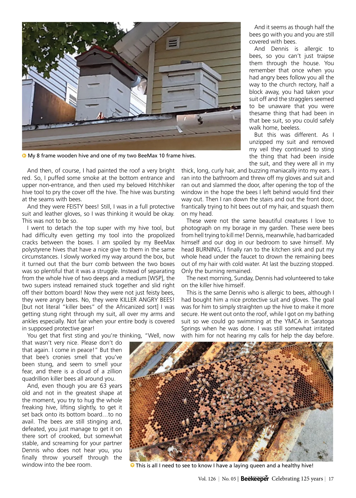

And it seems as though half the
bees go with you and you are still
covered with bees.
And Dennis is allergic to
bees, so you can’t just traipse
them through the house. You
remember that once when you
had angry bees follow you all the
way to the church rectory, half a
block away, you had taken your
suit off and the stragglers seemed
to be unaware that you were
thesame thing that had been in
that bee suit, so you could safely
walk home, beeless.
But this was different. As I
unzipped my suit and removed
my veil they continued to sting
the thing that had been inside
the suit, and they were all in my
thick, long, curly hair, and buzzing maniacally into my ears. I
ran into the bathroom and threw off my gloves and suit and
ran out and slammed the door, after opening the top of the
window in the hope the bees I left behind would find their
way out. Then I ran down the stairs and out the front door,
frantically trying to hit bees out of my hair, and squash them
on my head.
These were not the same beautiful creatures I love to
photograph on my borage in my garden. These were bees
from hell trying to kill me! Dennis, meanwhile, had barricaded
himself and our dog in our bedroom to save himself. My
head BURNING, I finally ran to the kitchen sink and put my
whole head under the faucet to drown the remaining bees
out of my hair with cold water. At last the buzzing stopped.
Only the burning remained.
The next morning, Sunday, Dennis had volunteered to take
on the killer hive himself.
This is the same Dennis who is allergic to bees, although I
had bought him a nice protective suit and gloves. The goal
was for him to simply straighten up the hive to make it more
secure. He went out onto the roof, while I got on my bathing
suit so we could go swimming at the YMCA in Saratoga
Springs when he was done. I was still somewhat irritated
with him for not hearing my calls for help the day before.
And then, of course, I had painted the roof a very bright
red. So, I puffed some smoke at the bottom entrance and
upper non-entrance, and then used my beloved Hitchhiker
hive tool to pry the cover off the hive. The hive was bursting
at the seams with bees.
And they were FEISTY bees! Still, I was in a full protective
suit and leather gloves, so I was thinking it would be okay.
This was not to be so.
I went to detach the top super with my hive tool, but
had difficulty even getting my tool into the propolized
cracks between the boxes. I am spoiled by my BeeMax
polystyrene hives that have a nice give to them in the same
circumstances. I slowly worked my way around the box, but
it turned out that the burr comb between the two boxes
was so plentiful that it was a struggle. Instead of separating
from the whole hive of two deeps and a medium [WSP], the
two supers instead remained stuck together and slid right
off their bottom board! Now they were not just feisty bees,
they were angry bees. No, they were KILLER ANGRY BEES!
[but not literal “killer bees” of the Africanized sort] I was
getting stung right through my suit, all over my arms and
ankles especially. Not fair when your entire body is covered
in supposed protective gear!
You get that first sting and you’re thinking, “Well, now
that wasn’t very nice. Please don’t do
that again. I come in peace!” But then
that bee’s cronies smell that you’ve
been stung, and seem to smell your
fear, and there is a cloud of a zillion
quadrillion killer bees all around you.
And, even though you are 63 years
old and not in the greatest shape at
the moment, you try to hug the whole
freaking hive, lifting slightly, to get it
set back onto its bottom board…to no
avail. The bees are still stinging and,
defeated, you just manage to get it on
there sort of crooked, but somewhat
stable, and screaming for your partner
Dennis who does not hear you, you
finally throw yourself through the
window into the bee room.
My 8 frame wooden hive and one of my two BeeMax 10 frame hives.
This is all I need to see to know I have a laying queen and a healthy hive!
Vol. 126 | No. 05 |
Celebrating 125 years | 17